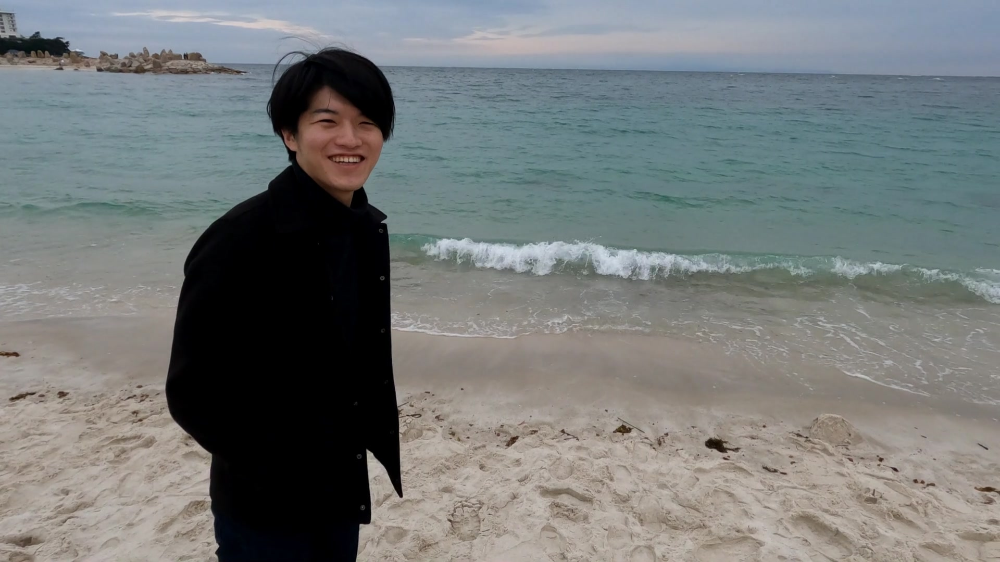

Abount Me
前田 修作
生年月日 1997年6月25日
大阪大学大学院基礎工学研究科機能創成専攻 和田研究室
博士後期課程1年
理工情報系オナー大学院プログラム電子情報ユニット
Education
2022年4月- 大阪大学大学院基礎工学研究科機能創成専攻 博士後期課程
2020年4月-2022年3月 大阪大学大学院基礎工学研究科機能創成専攻 博士前期課程
2018年4月-2020年3月 大阪大学基礎工学部システム科学科機械科学コース
2013年4月-2018年3月 神戸市立工業高等専門学校機械工学科
2010年4月-2013年3月 神戸市立本庄中学校
Journal Article
Shusaku Maeda, Tomohiro Otani, Shigeki Yamada, Yoshiyuki Watanabe, Selin Yavuz Ilik and Shigeo Wada, "Augmented circulation of the cerebrospinal fluid around the cerebral aqueduct in idiopathic normal pressure hydrocephalus patients", Fluids and Barriers of the CNS, in review.
International Conference
Shusaku Maeda, Tomohiro Otani, Selin Yavuz Ilik, Shigeki Yamada, Yoshiyuki Watanabe, Shigeo Wada, “Computational study of cerebrospinal fluid mixing in cerebral aqueduct in idiopathic normal pressure hydrocephalus patients”, 9th World Congress of Biomechanics 2022 Taipei. (accepted), semi-finalist.
Shusaku Maeda, Tomohiro Otani, Shigeki Yamada, Yoshiyuki Watanabe, Selin Yavuz Ilik, Naoki Takeishi, Shigeo Wada, “Development on a computational framework to express patient-specific intracranial cerebrospinal fluid flow based on phase-contrast magnetic resonance images”, Summer Biomechanics, Bioengineering and Biotransport Conference, June, 2021.
Domestic Conference
前田 修作，大谷智仁，Selin Yavuz Ilik，山田 茂樹，渡邊 嘉之，武石 直樹，和田 成生，“MRI計測に基づく正常圧水頭症の脳脊髄液流れの数値シミュレーション”，日本機械学会第33回バイオエンジニアリング講演会6月，2021年．
前田 修作，大谷 智仁，Selin Yavuz Ilik，山田 茂樹，渡邊 嘉之，武石 直樹，和田 成生，”位相コントラストMRI計測に基づく正常圧水頭症における頭蓋内脳脊髄液動態の解析”，日本機械学会関西支部第96 期定時総会講演会，メガボケーション学生研究発表セッション，3月，2021年．
前田 修作，Selin Yavuz Ilik，大谷 智仁，武石 直樹，和田 成生，“ヒト脳室系における脳脊髄液流れの駆動メカニズム（ 数値流体力学シミュレーションによる検討）”，日本機械学会第31 回バイオフロンティア講演会，12月，2020年．
前田 修作，北出 宏紀，武石 直樹，和田 成生，"全脳間質液流動の全容解明に向けた計算力学モデルの構築と解析"，日本機械学会関西学生会2019年度学生卒業研究発表講演会，3月，2020．
Grants
次世代研究者育成プロジェクト「学際融合を推進し社会実装を担う次世代挑戦的研究者育成プロジェクト」- 600千円/年，2022年4月-2025年3月．
Σ博士未来研究助成金- 300千円/2021年度，200千円/2022年度，大阪大学．
Scholarship
次世代研究者育成プロジェクト「学際融合を推進し社会実装を担う次世代挑戦的研究者育成プロジェクト」150千円/月, 2022年4月-2025年3月．
理工情報系オナー大学院奨学金 20千円/月, 2021年4月-2022年3月．
中董奨学会 40千円/月, 2020年4月-2022年3月．
山田育英会 25千円/月, 2020年4月-2022年3月．
寺浦奨学会 50千円/月, 2019年4月-2020年3月．
ユニタイト奨学金 10千円/月, 2016年4月-2017年3月．
Award
大阪大学大学院基礎工学研究科賞，2022年3月．